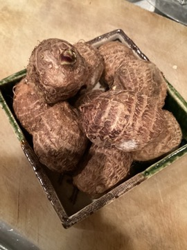

饗応元では、旬の魚や馬刺しだけでなく、料理を彩る野菜も店主自らが目利きして仕入れています。今回は、実際に仕入れた食材を写真とともにご紹介します。

つる紫
葉物野菜のつる紫は、この時季ならではの食材のひとつです。和食の伝統を大切にしながらイタリアンで培った自由な発想をひと匙加える饗応元の料理の中で、季節を感じていただける一皿に仕立てています。

里芋
里芋も、季節ごとに店主が仕入れる食材のひとつです。旬の魚や馬刺しをはじめとした厳選素材と同じように、野菜についても素材本来の旨味を引き出すことを大切にしています。
食材選びへの想い
「日本酒がたくさんある店」ではなく「料理に合わせて酒匠が日本酒を選ぶ店」であることと同じように、食材についても店主自らが目利きすることにこだわっています。仕入れる食材は季節や入荷状況により変わりますので、詳しくはご来店時にお気軽にお尋ねください。